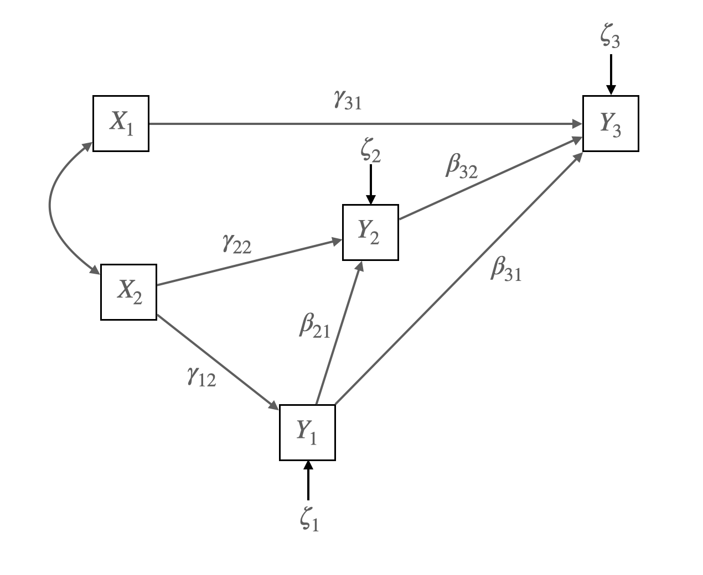
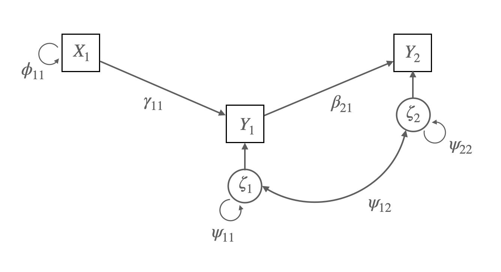
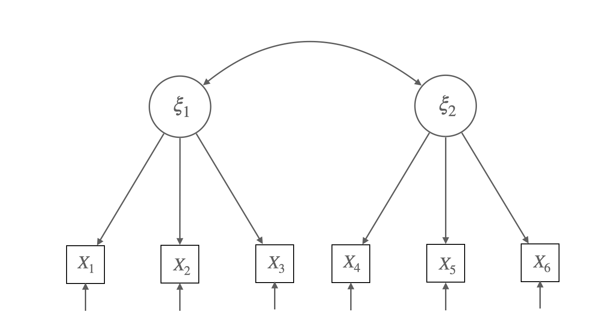
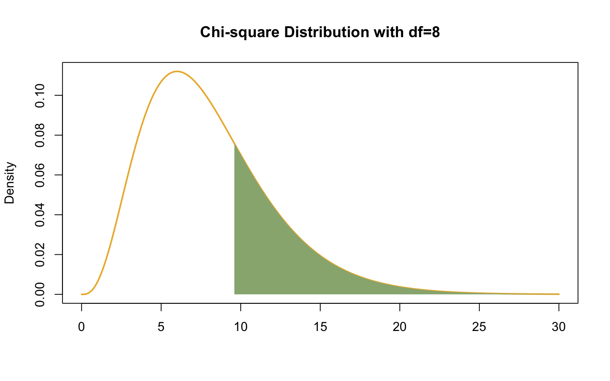
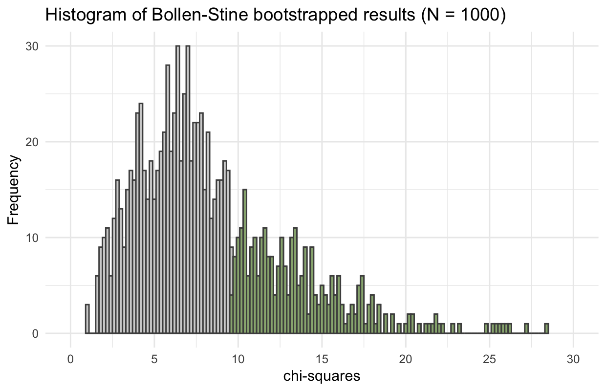
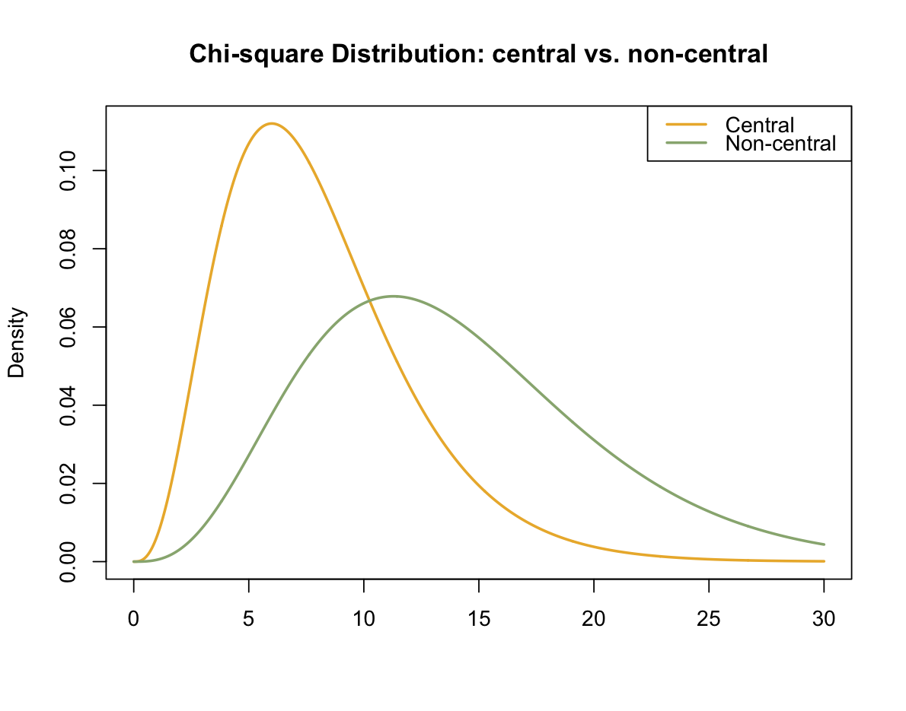
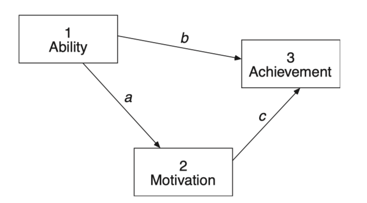
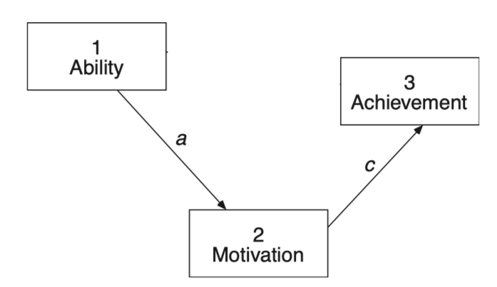
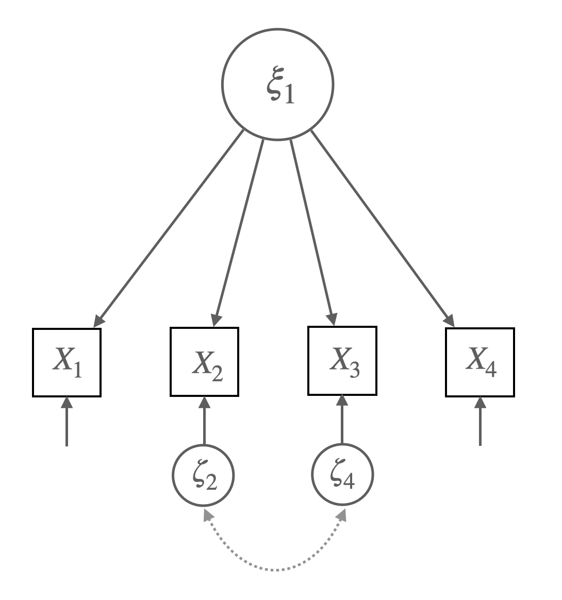
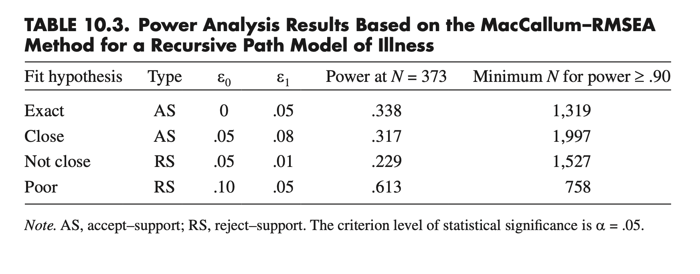

Load libraries
library(tidyverse)
library(lavaan)
library(semTools)Structural equations with latent variables by Bollen, Kenneth A. (1989)
library(tidyverse)
library(lavaan)
library(semTools)Measures of political democracy and industrialization for 75 developing countries in 1960 and 1965

Figure 4.2 Union Sentiment Model for Southern Textile Workers
Source: p. 83, Bollen, K. A. (1989). Structural equations with latent variables
Matrix representation of the model:
\[ \mathbf{Y} = \mathbf{B}\mathbf{Y} + \mathbf{\Gamma}\mathbf{X} + \boldsymbol{\zeta} \]
\[ \begin{bmatrix} y_1 \\ y_2 \\ y_3 \end{bmatrix} = \begin{bmatrix} 0 & 0 & 0 \\ \beta_{21} & 0 & 0 \\ \beta_{31} & \beta_{32} & 0 \end{bmatrix} \begin{bmatrix} y_1 \\ y_2 \\ y_3 \end{bmatrix} + \begin{bmatrix} 0 & \gamma_{12} \\ 0 & \gamma_{22} \\ \gamma_{31} & 0 \end{bmatrix} \begin{bmatrix} x_1 \\ x_2 \end{bmatrix} + \begin{bmatrix} \zeta_1 \\ \zeta_2 \\ \zeta_3 \end{bmatrix} \]
가정 1: 내생변수의 오차항과 외생변수는 서로 독립; \(\zeta \perp X\)
가정 2: 각 변수는 평균이 0이고, 변수들은 multivariate normal을 따름
The covariance matrix of exogenous variables:
\[ \mathbf{\Phi} = \begin{bmatrix} \phi_{11} & \phi_{12} \\ \phi_{21} & \phi_{22} \end{bmatrix} \]
The covariance matrix of error terms:
\[ \mathbf{\Psi} = \begin{bmatrix} \psi_{11} & 0 & 0 \\ 0 & \psi_{22} & 0 \\ 0 & 0 & \psi_{33} \end{bmatrix} \]
# A dataset from Bollen (1989) containing measures of political democracy and industrialization for 75 developing countries in 1960 and 1965.
bollen1989a <- MIIVsem::bollen1989a |> as_tibble()
# fig 4.2
model <- '
y3 ~ x1 + y1 + y2
y2 ~ x2 + y1
y1 ~ x2
'
fit <- sem(model, data = bollen1989a, fixed.x = FALSE)# coefficients: betas & gamma
inspect(fit, what = "est")$beta |> round(2) |> print() y3 y2 y1 x1 x2
y3 0 0.06 0.76 0.36 0.00
y2 0 0.00 0.88 0.00 0.16
y1 0 0.00 0.00 0.00 0.56
x1 0 0.00 0.00 0.00 0.00
x2 0 0.00 0.00 0.00 0.00# covariances: psi & phi
inspect(fit, what = "est")$psi |> round(2) |> print() y3 y2 y1 x1 x2
y3 5.64
y2 0.00 9.71
y1 0.00 0.00 6.09
x1 0.00 0.00 0.00 0.53
x2 0.00 0.00 0.00 0.98 2.25
Source: p. 86, Bollen, K. A. (1989). Structural equations with latent variables
\(y_1 = \gamma_{11}x_1 + \zeta_1\)
\(y_2 = \beta_{21}y_1 + \zeta_2\)
Matrix representation:
\(\begin{bmatrix} y_1 \\ y_2 \end{bmatrix} = \begin{bmatrix} 0 & 0 \\ \beta_{21} & 0 \end{bmatrix} \begin{bmatrix} y_1 \\ y_2 \end{bmatrix} + \begin{bmatrix} \gamma_{11} \\ 0 \\ \end{bmatrix} \begin{bmatrix} x_1 \end{bmatrix} + \begin{bmatrix} \zeta_1 \\ \zeta_2 \end{bmatrix}\)
\(\mathbf{\Phi} = \begin{bmatrix} \phi_{11} \end{bmatrix}\)
\(\mathbf{\Psi} = \begin{bmatrix} \psi_{11} & \psi_{12}\\ \psi_{21} & \psi_{22}\\ \end{bmatrix}\)
가정들:
\(Cov(aX+bY,~ cU+dV) = ac~Cov(X, U) + ad~Cov(X, V) + bc~Cov(Y, U) + bd~Cov(Y, V)\)
\(\begin{align} cov(y_1, y_2) & = cov(\gamma_{11}x_1 + \zeta_1, \beta_{21}y_1 + \zeta_2) \\ & = \gamma_{11} \beta_{21} cov(x_1, y_1) + \gamma_{11} cov(x_1, \zeta_2) + \beta_{21} cov(y_1, \zeta_1) + cov(\zeta_1, \zeta_2) \\ & = \gamma_{11} \beta_{21} * \gamma_{11} \phi_{11} + \beta_{21} \psi_{11} \\ & = \beta_{21}( \gamma_{11}^2 \phi_{11} + \psi_{11}) \end{align}\)
\[\begin{equation} \begin{bmatrix} \text{VAR}(y_1) \\ \text{COV}(y_2, y_1) & \text{VAR}(y_2) \\ \text{COV}(x_1, y_1) & \text{COV}(x_1, y_2) & \text{VAR}(x_1) \end{bmatrix} = \begin{bmatrix} \gamma_{11}^2\phi_{11} + \psi_{11} \\ \beta_{21}(\gamma_{11}^2\phi_{11} + \psi_{11}) & \beta_{21}^2(\gamma_{11}^2\phi_{11} + \psi_{11}) + \psi_{22} \\ \gamma_{11}\phi_{11} & \beta_{21}\gamma_{11}\phi_{11} & \phi_{11} \end{bmatrix} \end{equation}\]
기본적인 구조 모형의 가설(hypothesis):
\(\Sigma = \Sigma(\theta)\)
즉, 모집단의 공분산 = 모수(parameter)로 표현되는(implied) 공분산
이제 이 둘의 차 \(\mathbf{S} - \hat{\Sigma}(\theta)\)를 최소화하는 파라미터들(통칭 \(\theta\))를 찾고자 함.
예를 들어,
# covariance matrix
lower <- '
225.2
32.1 100.3
111.4 26.5 105.2'
cov <- getCov(lower, names = c("x1", "y1", "y2"))model <- '
# regressopm
y2 ~ 0*x1 + y1
y1 ~ x1
# variacne
# y2 ~~ y1 # assumed to be uncorrelated
'
fit <- sem(model, sample.cov = cov, sample.nobs = 200, fixed.x = F)parameterEstimates(fit) |> print() lhs op rhs est se z pvalue ci.lower ci.upper
1 y2 ~ x1 0.000 0.000 NA NA 0.000 0.000
2 y2 ~ y1 0.264 0.070 3.776 0.000 0.127 0.401
3 y1 ~ x1 0.143 0.046 3.092 0.002 0.052 0.233
4 y2 ~~ y2 97.708 9.771 10.000 0.000 78.557 116.858
5 y1 ~~ y1 95.246 9.525 10.000 0.000 76.578 113.914
6 x1 ~~ x1 224.074 22.407 10.000 0.000 180.156 267.992# implied covariance matrix
sigma_hat <- lavInspect(fit, "cov.all")[3:1, 3:1] |> round(1)
sigma_hat |> print() x1 y1 y2
x1 224.1 31.9 8.4
y1 31.9 99.8 26.4
y2 8.4 26.4 104.7# 공분산 행렬 차이: residual covariance matrix
(cov - sigma_hat) |> print() x1 y1 y2
x1 1.1 0.2 103.0
y1 0.2 0.5 0.1
y2 103.0 0.1 0.5즉, \(\mathbf{S} - \hat{\Sigma}(\theta) = \begin{bmatrix} 1.1 \\ 0.2 & 0.5 \\ 103.0 & 0.1 & 0.5 \end{bmatrix}\)
이는 어떤 다른 파라미터 값에 대해서도 이 공분산 차이보다 더 작을 수 없다는 의미임.
한편, 어떤 의미에서 차이가 작다는지를 정의해야 함.
\(\mathbf{S} - \hat{\Sigma}(\theta)\)가 작다는 것을 어떻게 정의할 것인가?
혹은, 두 행렬 \(\mathbf{S}\), \(\hat{\Sigma}(\theta)\) 사이의 거리를 어떻게 정의할 것인가?
Fitting function(목적 함수)를 통해 그 함수가 최소가 되는 파라미터를 찾는 방식
Maximum Likelihood Estimation
관측 변수들이 multivariate normal distribution을 따른다고 가정하면,
Log-likelihood \(\displaystyle L(\theta) = \frac{-N(p + q)}{2}log(2\pi) - \frac{N}{2}\left(log|\Sigma(\theta)| + tr(S\Sigma^{-1}(\theta))\right)\)
\(F_{ML} = log|\Sigma(\theta)| + tr(S\Sigma^{-1}(\theta)) - log|S| - (p + q)\)
즉, likelihood를 최대화하는 것은 \(F_{ML}\)를 최소화하는 것과 동일함.
Fitting function으로써 \(F_{ML}\)의 장점은 asymptotic properties를 가지고 있음.
ML 파라미터 추정치는 일반적으로 robust하나, 표준오차는 문제가 될 수 있음.
다음과 같은 ML에 대한 robust estimation들은 표준오차에 대한 보정을 제공함.
Source: p. 137, 163, Klein, R. B. (2023). Principles and Practice of Structural Equation Modeling (5e)
위의 예에서,
즉, 식은 6개이며 미지수는 5개이므로 추정가능함!
이 때, 자유도(degree of freedom) df = 6 - 5 = 1
summary(fit, estimate = F) |> print()lavaan 0.6-19 ended normally after 10 iterations
Estimator ML
Optimization method NLMINB
Number of model parameters 5
Number of observations 200
Model Test User Model:
Test statistic 139.381
Degrees of freedom 1
P-value (Chi-square) 0.000# info for parameters
lavaan::parTable(fit) |> print() id lhs op rhs user block group free ustart exo label plabel start est
1 1 y2 ~ x1 1 1 1 0 0 0 .p1. 0.000 0.000
2 2 y2 ~ y1 1 1 1 1 NA 0 .p2. 0.111 0.264
3 3 y1 ~ x1 1 1 1 2 NA 0 .p3. 0.143 0.143
4 4 y2 ~~ y2 0 1 1 3 NA 0 .p4. 48.671 97.708
5 5 y1 ~~ y1 0 1 1 4 NA 0 .p5. 95.246 95.246
6 6 x1 ~~ x1 0 1 1 5 NA 0 .p6. 224.074 224.074
se
1 0.000
2 0.070
3 0.046
4 9.771
5 9.525
6 22.407모형에 대한 평가는 1) 변수들 간의 관계성 2) 그 관계의 크기 모두에 대해 이루어져야 함.
이를 위해 전체적인 평가(overal fit measures)와 부분적인 평가(local/component fit measures)로 나누어 살펴봄.
두 행렬 \(\mathbf{S}\)와 \(\hat{\Sigma}(\theta)\)간의 거리를 측정하여 모형이 전체적으로 얼마나 적합한지를 평가함.
부분적인(local) 적합도를 살펴보는 것으로는 드러나지 못하는 “전체적 부적절함”을 판별할 수는 지표를 얻을 수 있음.
Ideally, all residuals should be near zero for a “good” model. But the sample residuals are affected by several factors: (1) the departure of \(\Sigma\) from \(\Sigma(\theta)\), (2) the scales of the observed variables, and (3) sampling fluctuations
표본의 크기가 커질수록, 공분산/상관 잔차의 값이 줄어드는 경향이 있음.
예제: Reisenzein(1986)의 실험
동정심
x1: 그 사람에 대해 얼마나 동정심(sympathy)을 느끼십니까?
x2: 나는 이 사람에게 연민(pity)을 느낍니다.
x3: 이 사람에 대해 얼마나 걱정(concern)이 되십니까?
분노
x4: 그 사람에게 얼마나 화가 나시나요?
x5: 그 사람에게 얼마나 짜증을 느끼시겠습니까?
x6: 그 사람 때문에 기분이 나빠질 것입니다.
Source: p. 260, Bollen, K. A. (1989). Structural equations with latent variables

Figure 7.4 Confirmatory Factor Analysis Model for Sympathy (\(\xi_1\)) and Anger (\(\xi_2\)).
Each Measured with Three Indicators (\(X_1\) to \(X_6\))
Matrix representation for the CFA model:
\(x_1 = \lambda_{11}\xi_1 + \delta_1\), \(x_2 = \lambda_{21}\xi_1 + \delta_2\), \(x_3 = \lambda_{31}\xi_1 + \delta_3\),
\(x_4 = \lambda_{42}\xi_2 + \delta_4\), \(x_5 = \lambda_{52}\xi_2 + \delta_5\), \(x_6 = \lambda_{62}\xi_2 + \delta_6\)
\(\begin{bmatrix} x_1 \\ x_2 \\ x_3 \\ x_4 \\ x_5 \\ x_6 \end{bmatrix} = \begin{bmatrix} \lambda_{11} & 0 \\ \lambda_{21} & 0 \\ \lambda_{31} & 0 \\ 0 & \lambda_{42} \\ 0 & \lambda_{52} \\ 0 & \lambda_{62} \end{bmatrix} \begin{bmatrix} \xi_1 \\ \xi_2 \end{bmatrix} + \begin{bmatrix} \delta_1 \\ \delta_2 \\ \delta_3 \\ \delta_4 \\ \delta_5 \\ \delta_6 \end{bmatrix}\)
\(\mathbf{x} = \mathbf{\Lambda}\mathbf{\xi} + \boldsymbol{\delta}\)
가정: \(COV(\xi_i, \delta_j) = 0\) for all \(i\) and \(j\)
The covariance matrix of exogenous variables:
\[\mathbf{\Phi} = \begin{bmatrix} \phi_{11} & \\ \phi_{21} & \phi_{22} \end{bmatrix} \]
The covariance matrices of the errors of measurement
\[\mathbf{\Theta_{\delta}} = \begin{bmatrix} V(\delta_1) \\ 0 & V(\delta_2) \\ 0 & 0 & V(\delta_3) \\ 0 & 0 & 0 & V(\delta_4) \\ 0 & 0 & 0 & 0 & V(\delta_5) \\ 0 & 0 & 0 & 0 & 0 & V(\delta_6) \end{bmatrix} \]
# fig 7.4
lower <- "
6.982
4.686 6.047
4.335 3.307 5.037
-2.294 -1.453 -1.979 5.569
-2.209 -1.262 -1.738 3.931 5.328
-1.671 -1.401 -1.564 3.915 3.601 4.977
"
cov <- getCov(lower, names = c("x1", "x2", "x3", "x4", "x5", "x6"))
model_sa <- '
sympathy =~ x1 + x2 + x3
anger =~ x4 + x5 + x6
'
fit_sa <- sem(model_sa, sample.cov = cov, sample.nobs = 138)# coveriance residuals
residuals(fit_sa) |> print()$type
[1] "raw"
$cov
x1 x2 x3 x4 x5 x6
x1 0.000
x2 0.028 0.000
x3 -0.016 -0.027 0.000
x4 -0.073 0.247 -0.387 0.000
x5 -0.170 0.297 -0.277 -0.030 0.000
x6 0.334 0.136 -0.126 0.013 0.020 0.000
# correlation residuals
residuals(fit_sa, type = "cor") |> print()$type
[1] "cor.bollen"
$cov
x1 x2 x3 x4 x5 x6
x1 0.000
x2 0.004 0.000
x3 -0.003 -0.005 0.000
x4 -0.012 0.043 -0.074 0.000
x5 -0.028 0.053 -0.054 -0.006 0.000
x6 0.057 0.025 -0.025 0.002 0.004 0.000
# standardized residuals
residuals(fit_sa, type = "standardized") |> print()$type
[1] "standardized"
$cov
x1 x2 x3 x4 x5 x6
x1 0.000
x2 1.353 0.000
x3 -1.035 -0.379 0.000
x4 -0.392 0.871 -1.503 0.000
x5 -0.723 0.967 -1.006 -1.203 0.000
x6 1.585 0.483 -0.493 0.568 0.566 0.000
Normalized vs standardized residuals: ratios of covariance residuals over the standard error of the sample covariance, not the standard error of the difference between sample and predicted values.
# normalized residuals
residuals(fit_sa, type = "normalized") |> print()$type
[1] "normalized"
$cov
x1 x2 x3 x4 x5 x6
x1 0.000
x2 0.042 0.000
x3 -0.026 -0.049 0.000
x4 -0.130 0.488 -0.809 0.000
x5 -0.311 0.604 -0.601 -0.053 0.000
x6 0.644 0.284 -0.285 0.023 0.038 0.000
공분산의 잔차들이 모집단에서 0과 다른지에 대한 통계적 검증하고자 함.
Chi-Square( \(\chi^2\)) Test
위의 CFA의 예에서,
\(\begin{align} \chi^2_{ML} = (N)*F_{ML}(S, \hat{\Sigma}(\theta)) & = N*\left(log|\Sigma(\theta)| + tr(\Sigma^{-1}(\theta)S) - log|S| - (p + q)\right) \\ & = 138 * 0.0698 = 9.632 \\ \end{align}\)
이 값은 다음과 같이 해석할 수 있음.
\(\begin{align} -2log\left(\frac{L_0}{L_1}\right) & = -2(logL_0 - logL_1) \\ & = -2*[-1654.635 - (-1649.817)] = 9.635 \\ \end{align}\)
Degree of freedom = \(\displaystyle\frac{6*7}{2} - 13 = 21 - 13 = 8\)


\(\chi^2\) 분포로부터 \(p = 0.292\), Bootstrap 샘플 중 29.8%
# Fitting function의 최소값
fitmeasures(fit_sa, "fmin") |> print(nd = 4) fmin
0.0349 # 설정한 모형의 log-likelihood & unrestricted 모형의 log-likelihood, chi-square 값
fitMeasures(fit_sa, c("chisq", "pvalue", "logl", "unrestricted.logl")) |> print() chisq pvalue logl unrestricted.logl
9.635 0.292 -1657.646 -1652.828 summary(fit_sa, fit.measures = T, estimates = F) |> print()lavaan 0.6-19 ended normally after 37 iterations
Estimator ML
Optimization method NLMINB
Number of model parameters 13
Number of observations 138
Model Test User Model:
Test statistic 9.635
Degrees of freedom 8
P-value (Chi-square) 0.292
Model Test Baseline Model:
Test statistic 473.058
Degrees of freedom 15
P-value 0.000
User Model versus Baseline Model:
Comparative Fit Index (CFI) 0.996
Tucker-Lewis Index (TLI) 0.993
Loglikelihood and Information Criteria:
Loglikelihood user model (H0) -1657.646
Loglikelihood unrestricted model (H1) -1652.828
Akaike (AIC) 3341.291
Bayesian (BIC) 3379.345
Sample-size adjusted Bayesian (SABIC) 3338.218
Root Mean Square Error of Approximation:
RMSEA 0.038
90 Percent confidence interval - lower 0.000
90 Percent confidence interval - upper 0.111
P-value H_0: RMSEA <= 0.050 0.526
P-value H_0: RMSEA >= 0.080 0.217
Standardized Root Mean Square Residual:
SRMR 0.030모든 적합도 지수는 \(\mathbf{S}\)와 \(\hat{\Sigma}(\theta)\)의 함수임.
특히, fitting function \(F_{ML}\)은 \(\mathbf{S}\)와 \(\hat{\Sigma}(\theta)\)의 차이를 측정해주는 스칼러 함수임.
\(F_{ML}\) 값 자체는 해석하기 어렵기 때문에, \(F_{ML}\)을 이용한 \(\mathbf{S}\)와 \(\hat{\Sigma}(\theta)\)의 차이를 측정해주는 다른 지표들이 유용함.
\(\chi^2\) 테스트가 가설 검증의 논리로 yes/no를 판단하는 것인 반면,
적합도 지표들은 모형이 데이터에 얼마나 잘 부합하는지를 연속적인 값으로 표현함.
과거 많은 지표들이 제안되어 왔으나, 시뮬레이션 연구등을 통해 현재까지 살아남아 널리 사용되고 보고되는 지표들은
RMSEA, CFI/TLI, SRMR
Sörbom(2001)이 Karl Jöreskog와 함께 한 1985년 워크숍에 대한 일화는 방금 설명한 근사적 적합도 지수에 대한 맥락을 제공합니다.
우리는 방금 GFI와 AGFI를 프로그램에 추가했습니다. Karl은 강의에서 카이 제곱만 있으면 충분하다고 말했습니다. 그러자 한 참가자가 “그럼 왜 GFI를 추가했나요?”라고 물었습니다. 그러자 Karl은 “음, 사용자들이 LISREL이 항상 그렇게 큰 카이 제곱을 생성하면 사용을 중단하겠다고 위협합니다. 그래서 사람들을 행복하게 할 무언가를 발명해야 했습니다. GFI가 그 목적에 부합합니다. (p. 10)
by Google Translate
Source: p. 164, Klein, R. B. (2023). Principles and Practice of Structural Equation Modeling (5e)
Base 모형과 비교하여 (추가된 파라미터로 인해) 연구자의 모형이 얼마나 개선되었는지를 측정함.
Base 모형은 기본적으로 가장 적합도가 낮은 모형, 즉 모든 변수들이 서로 독립이라고 가정한 모형으로 선택: baseline model, indepdendent(null) model
이는 \(R^2\)와 유사한 접근임.
\(\displaystyle\Delta_1 = \frac{\chi^2_b - \chi^2_m}{\chi^2_b - df_m}\)
Tucker–Lewis Index (TLI): Tucker & Lewis (1973), Bentler & Bonnett (1980)
TLI = \(\displaystyle\frac{\chi^2_b/df_b - \chi^2_m/df_m}{\chi^2_b/df_b - 1}\)
Steiger–Lind Root Mean Square Error of Approximation (Steiger, 1990)
\(\displaystyle RMSEA = \sqrt{\frac{\hat{\delta}}{df_m(N-1)}} = \sqrt{\frac{\chi^2_{ML} - df_m}{df_m(N-1)}} = \sqrt{\frac{F_{ML}}{df_m} - \frac{1}{N-1}}\)
RMSEA에 대한 confidence interval:
\(\displaystyle RMSEA_{lower} = \sqrt{max\left(0, \frac{\hat{\delta}_{.05}}{(N-1)df_m}\right)}\), \(\displaystyle RMSEA_{upper} = \sqrt{\frac{\hat{\delta}_{.95}}{(N-1)df_m}}\)
RMSEA <= 0.05에 대한 가설검증: 0.05보다 작을 때, 모형이 데이터에 잘 부합한다고 보고 가설검증의 기준으로 사용함.
Browne과 Cudeck(1993)은 \(\hat\epsilon\) ≤ .05가 유리한 결과라고 제안했지만, Chen et al.(2008)의 이후 컴퓨터 시뮬레이션 연구 결과는 \(\hat\epsilon\)이 단독으로 사용되든 90% 신뢰 구간과 함께 사용되든 .05 또는 다른 값의 보편적 임계값을 거의 뒷받침하지 않는다는 것을 나타냈습니다.
Browne과 Cudeck(1993)은 또한 \(\hat\epsilon\) ≥ .10이 모델 적합도가 낮음을 나타낼 수 있지만 보장은 없다고 제안했습니다.
Browne and Cudeck (1993) suggested that \(\hat\epsilon\) ≤ .05 is a favorable result, but results of later computer simulation studies by Chen et al. (2008) indicated little support for a universal threshold of .05—or any other value—regardless of whether \(\hat\epsilon\) is used alone or jointly with its 90% confidence interval.
Browne and Cudeck (1993) also suggested that \(\hat\epsilon\) ≥ .10 may indicate poor model fit, but there is no guarantee.
Source: p. 167, Klein, R. B. (2023). Principles and Practice of Structural Equation Modeling (5e)
예를 들어, 위의 CFA 예에서, 표본의 크기 N=200으로 생성된 데이터로부터 얻은 결과로 보면,
\(\chi^2_{ML}(8) = 13.963\)을 얻고, \(\hat\delta = 13.963 - 8 = 5.963\)임.
따라서, \(\chi^2_{ML}\)값의 표본 분포는 \(\chi^2(8, ~5.963)\)를 따름.
set.seed(123)
df <- semTools::kd(cov, n = 200, type = "exact") |> as_tibble()
mod_sa <- "
sympathy =~ x1 + x2 + x3
anger =~ x4 + x5 + x6
"
fit_sa <- sem(mod_sa, data = df)
fitMeasures(fit_sa, c("chisq", "df")) |> print() chisq df
13.963 8.000 
fitMeasures(fit_sa, c("rmsea", "rmsea.ci.lower", "rmsea.ci.upper", "rmsea.pvalue")) |> print() rmsea rmsea.ci.lower rmsea.ci.upper rmsea.pvalue
0.061 0.000 0.113 0.317 Comparative Fit Index
\(\displaystyle CFI = \frac{\hat\delta_b - \hat\delta_m}{\hat\delta_b}\)
Hu와 Bentler(1995)는 CFI ≥ .95가 유리한 결과라고 제안했는데, 이 기준은 Hu와 Bentler(1999)와 같은 일부 후기 몬테카를로 연구의 결과와 일반적으로 일치합니다. 하지만 훨씬 더 최근의 시뮬레이션 연구의 결과는 모델의 변화와 데이터의 비정규성 정도에 대한 CFI에 대한 특정 임계값의 일반성을 뒷받침하지 못했습니다(Fan & Sivo, 2005; Yuan, 2005). Brosseau-Liard와 Savalei(2014)가 설명한 비정규성에 대한 CFI의 robust 형태는 lavaan이 robust ML 방법에 따라 인쇄합니다.
Hu and Bentler (1995) suggested that CFI ≥ .95 is a favorable result, a benchmark generally consistent with results from some later Monte Carlo studies, such as Hu and Bentler (1999). But results from even more recent simulation studies failed to support the generality of any specific cutoff for the CFI over variations in models and degrees of nonnormality in the data (Fan & Sivo, 2005; Yuan, 2005). Robust forms of the CFI for nonnormal described by Brosseau-Liard and Savalei (2014) are printed by lavaan for robust ML methods.
Source: p. 169, Klein, R. B. (2023). Principles and Practice of Structural Equation Modeling (5e)
Standardized Root Mean Square Residual
\(\displaystyle SRMR = \sqrt{Ave\left[\left(\frac{\sigma_{ij} - \hat\sigma_{ij}}{\sqrt{\sigma_{ii}\sigma_{jj}}}\right)^2\right]}\)
Keith’s 교재 14장 ADVICE: MEASURES OF FIT 참고.
다음은 Kline’s(2023)에서 발췌
연속 근사 적합 지수에 대한 자연스러운 질문은 “허용 가능한” 또는 “좋은” 모델 적합도를 나타내는 값 범위와 관련이 있습니다. 안타깝게도 이 질문에 대한 간단한 답은 없습니다. 근사 적합 지수 값과 사양 오류의 심각성 또는 유형 사이에 카이 제곱 검정과 마찬가지로 직접적인 대응 관계가 없기 때문입니다. 또한 SEM에 대한 문헌이나 웹 페이지에서 볼 수 있는 RMSEA, CFI, SRMR 등의 지수에 대한 많은 해석 지침 또는 경험 규칙은 신뢰할 수 없습니다. 즉, 다양한 분야에서 분석된 광범위한 모델과 데이터에서 모델이 데이터에 “좋은” 적합도와 “나쁜” 적합도를 실제로 구별한다는 증거가 거의 없습니다.
A natural question about continuous approximate fit indexes involves the range of values indicating “acceptable” or even “good” model fit. Well, unfortunately, there is no simple answer to this question because there is no direct correspondence between values of approximate fit indexes and the seriousness or types of specification error, just as for the chi-square test. Also, many interpretive guidelines or rules of thumb for the RMSEA, CFI, and SRMR, among other indexes, seen in the literature or web pages about SEM are untrustworthy; that is, there is little evidence that they actually differentiate between model “good” versus “poor” fit to the data across the wide range of models and data analyzed in different disciplines.
Source: p. 170, Klein, R. B. (2023). Principles and Practice of Structural Equation Modeling (5e)
Flexible Cutoffs: Package FCO
Tailored cutoff values are generated for the RMSEA, CFI, TLI, and SRMR depending on the CFA model, the degree of nonnormality, and the amount of accepted uncertainty.
Dynamic Fit Index Cutoffs For Latent Variable Models
Simulates fit index cutoffs for latent variable models that are tailored to the user’s model statement, model type, and sample size.
Source: p. 171, Klein, R. B. (2023). Principles and Practice of Structural Equation Modeling (5e)
Keith’s 교재 14장 ADVICE: MEASURES OF FIT 참고
흔히 적용하는 적합도 지수의 임계값들:

Source: p. 172, Klein, R. B. (2023). Principles and Practice of Structural Equation Modeling (5e)
번역 by Google Translate
다음에 설명된 방법은 SEM(Appelbaum et al., 2018)에 대한 보고 표준과 일치하며 연구자에게 과거 경험에서 사실이었던 것보다 더 많은 정보를 보고할 것을 요구합니다.
동시 추정 방법을 사용하는 경우 자유도와 p 값이 있는 모델 카이 제곱을 보고합니다. 결과 변수가 이분형이고 경로 계수가 이진 로지스틱 또는 프로빗 회귀 방법을 사용하여 추정되는 경우와 같이 모델 카이 제곱을 사용할 수 없는 일부 분석이 있습니다. 예를 들어 Muthén 및 Muthén(1998–2017, 3장)을 참조하세요. 그러나 이는 예외적인 경우입니다.
모델이 정확한 적합성 검정(exact-fit test)에 실패하면 (a) 직접 그렇게 말하고 표본 크기에 관계없이 (b) 모델을 잠정적으로 거부합니다. 다음으로 (c) 부적합의 크기와 가능한 원인을 모두 진단합니다(로컬 적합성 검사). 그 이유는 통계적으로 유의하지만 미미한 모델-데이터 불일치를 감지하여 실패를 설명하는 것입니다. 이는 대규모 샘플에서 발생할 가능성이 가장 높습니다. 모델을 거부하기로 한 초기 결정은 철회될 수 있지만, 관찰된 모델-데이터 불일치가 실제로 중요하지 않은 이유에 대한 설명과 함께 로컬 적합성 증거에 근거해야 합니다.
모델이 정확한 적합성 검정(exact-fit test)을 통과하더라도 여전히 지역적 적합성을 검사해야 합니다. 그 이유는 통계적으로 유의하지 않지만 모델에 의심을 품기에 충분히 큰 모델-데이터 불일치를 감지하는 것입니다. 이는 소규모 샘플에서 발생할 가능성이 가장 높습니다. 지역적 적합성에 대한 증거가 상당한 불일치를 나타내는 경우 카이제곱 검정을 통과했더라도 모델을 거부해야 합니다.
상관 관계, 표준화 또는 정규화된 잔차와 같은 잔차 행렬을 원고 본문에 보고합니다. 모델이 너무 커서 다루기 힘들다면 (a) 보충 자료에 이러한 표를 제공하고 (b) 논문에 더 큰 잔차의 위치와 부호와 같은 잔차 패턴을 설명합니다. 모델이 어떻게 잘못 지정되었는지 이해하는 데 진단적 가치가 있을 수 있는 패턴을 찾습니다. 잔차에 대한 정보가 없는 결과 보고서는 불충분합니다. 불행히도 이 분야에서 불완전한 보고는 예외가 아니라 표준입니다. 예를 들어, 조직 관리 분야에서 발표된 144개의 SEM 연구를 검토한 결과, 이러한 작업의 약 17%에서만 잔차가 언급되었습니다(Zhang et al., 2021).
근사적 적합 지수 값을 보고하는 경우 이 장에서 앞서 설명한 최소 집합(RMSEA, CFI, SRMR)에 대한 값을 포함합니다. 그러나 이러한 전역적 적합 통계에 대해 고정 또는 동적 임계값에만 의존하여 모델을 유지하는 것을 정당화하려고 하지 마십시오. 이는 특히 모델이 정확한 적합 테스트(exact-fit test)에 실패하고 잔차 패턴이 사소하지 않은 모형의 설정 오류(specification error)를 시사하는 경우에 해당합니다.
초기 모델을 다시 지정하는 경우 그렇게 하는 근거를 설명하세요. 또한 잔차와 같은 진단 통계가 재지정에서 어떤 역할을 했는지 설명해야 합니다. 즉, 모델에 대한 양적 결과, 관련 이론, 원래 모델의 수정 사항 간의 연결을 지적하세요(3장). 정확한 적합도 검정(exact-fit test)에 여전히 실패한 다시 지정된 모델을 유지하는 경우 모델-데이터 불일치가 진정으로 미미하다는 것을 보여주세요. 그렇지 않으면 모델에 대한 상당한 공분산 증거가 없다는 것을 보여주지 못한 것입니다.
모델 적합도에 대한 통계적 증거는 중요하지만 모델을 유지할지 여부를 결정하는 유일한 요소는 아닙니다. 예를 들어, 연구 문제를 감안할 때 파라미터 추정치는 타당해야 합니다. 동일한 인과 과정으로 생성된 향후 재현연구들에서 데이터 세트에 적합할 가능성이 합리적으로 높은 모델은 특정 데이터 세트에 잘 맞는 모델보다 선호되어야 합니다. 이는 잠재적으로 임의의 모든 데이터에 적합할 수 있는 복잡하고 과도하게 많은 파라미터가 포함된 모델의 경우에 특히 그렇습니다. 이러한 모델은 (a) 보다 간결한 모델보다 반증 가능성이 낮고 (b) 샘플과 설정의 변화에 대해 일반화할 가능성이 낮습니다(Preacheret al., 2013).
모델이 유지되는 경우 연구자는 각각 동일한 데이터를 정확히 또는 거의 잘 설명하는 동등하거나 거의 동등한 버전보다 해당 모델이 선호되어야 하는 이유를 설명해야 합니다. 이 단계는 통계적 단계보다 훨씬 논리적이며, 심각한 경쟁 모델을 구별하기 위해 향후 연구에서 수행할 수 있는 작업을 설명하는 것도 포함됩니다. 동등하거나 거의 동등한 모델에 대한 완전한 보고는 드뭅니다. 따라서 신중한 독자는 이런 방식으로 자신의 SEM 분석을 두드러지게 만들 수 있습니다.
어떤 모델도 유지되지 않는 경우 분석에서 테스트한 이론에 대한 의미를 설명하는 데 학자로서의 기술이 필요합니다.
결국 모델을 유지했는지 여부에 관계없이 진정한 영예는 최선을 다해 철저한 평가 프로세스를 논리적인 끝까지 따르는 데서 나옵니다. 시인 랄프 왈도 에머슨은 이렇게 말했습니다. 잘한 일에 대한 보상은 그것을 해냈다는 것입니다(Mikis, 2012, p. 294).
The method outlined next is consistent with reporting standards for SEM (Appelbaum et al., 2018) and also calls on researchers to report more information about model fit than has been true in past experience:
If you use a simultaneous estimation method, report the model chi-square with its degrees of freedom and p value. There are some analyses, such as when outcome variables are dichotomous and path coefficients are estimated using methods for binary logistic or probit regression, where a model chi-square may be unavailable—see Muthén and Muthén (1998–2017, chap. 3) for examples—but these are exceptional cases.
If the model fails the exact-fit test, then (a) directly say so and, regardless of sample size, (b) tentatively reject the model. Next, (c) diagnose both the magnitude and possible sources of misfit (inspect local fit). The rationale is to detect statistically significant but slight model–data discrepancies that explain the failure. This is most likely to happen in a large sample. The initial decision to reject the model could be rescinded, but only based on local fit evidence along with explanation about why observed model–data discrepancies are actually inconsequential.
If the model passes the exact-fit test, you still have to inspect local fit. The rationale is to detect model–data discrepancies that are not statistically significant but still great enough to cast doubt on the model. This most likely occurs in a small sample. If evidence about local fit indicates appreciable discrepancies, then the model should be rejected even though it passed the chisquare test.
Report a matrix of residuals, such as correlation, standardized, or normalized residuals, in the body of the manuscript. If the model is so large that doing so would be unwieldy, then (a) provide such tables in the supplemental materials and (b) describe in the manuscript the pattern of residuals, such as the locations of larger residuals and their signs. Look for patterns that may be of diagnostic value in understanding how the model may be misspecified. Any report of the results without information about the residuals is deficient. Unfortunately, incomplete reporting in this area is the norm rather than the exception. For example, in our review of 144 published SEM studies in the area of organizational management, residuals were mentioned in only about 17% of these works (Zhang et al., 2021).
If you report values of approximate fit indexes, then include those for the minimal set described earlier in this chapter. But do not try to justify retaining the model by depending solely on thresholds, either fixed or dynamic, for such global fit statistics. This is especially true if the model failed the exact-fit test and the pattern of residuals suggests a specification error that is not trivial.
If you respecify the initial model, explain the rationale for doing so. You should also explain the role that diagnostic statistics, such as residuals, played in the respecification. That is, point out the connections between the numerical results for the model, relevant theory, and modifications to the original model (Chapter 3). If you retain a respecified model that still fails the exact-fit test, then demonstrate that model–data discrepancies are truly slight; otherwise, you have neglected to show that there is no appreciable covariance evidence against the model.
Statistical evidence about model fit is important, but it is not the sole factor in deciding whether to retain a model. For example, the parameter estimates should make sense, given the research problem. Models with reasonable prospects for fitting data sets in future replications generated by the same causal processes should be preferred over models that fit a particular data set well. This is especially true for complex, overparameterized models that could potentially fit just about any arbitrary data. Such models are (a) less falsifiable than more parsimonious models and (b) less likely to generalize over variations in samples and settings (Preacheret al., 2013).
If a model is retained, then the researcher should explain why that model should be preferred over equivalent or near-equivalent versions that, respectively explain the same data exactly as well or nearly as well. This step is much more logical than statistical, and it also involves describing what might be done in future research to differentiate between any serious competing models. Complete reporting about equivalent or near-equivalent models is rare; thus, conscientious readers can really distinguish their own SEM analyses by addressing this issue. The generation and assessment of equivalent versions of structural models are covered in the next chapter.
If no model is retained, then your skills as a scholar are needed to explain the implications for the theory tested in your analysis.
At the end of the day, regardless of whether or not you have a retained a model, the real honor comes from following, to the best of your ability, a thorough evaluation process to its logical end. The poet Ralph Waldo Emerson put it this way: The reward of a thing well done is to have done it (Mikis, 2012, p. 294).
Parameter estimation
\(R^2\): 잔차의 분산(\(1-R^2\))을 통해 설명력을 평가할 필요가 있음
Nested Models: 원래의 모형에 제약을 가하거나 추가해 위계적으로 파라미터들를 공유하는(포함하는/포함되는) 모형들
가령, (밑 박스 안의 그림) 모형 2: \(\chi^2(5) = 18.300, ~p = .003\) 을 얻고,
직접 효과 b를 추정하는 모형 1: \(\chi^2(4) = 9.100, ~p = .059\) 을 얻었다면,
\(\Delta df = 5 - 4 = 1\),
\(\Delta\chi^2 = 18.300 - 9.100 = 9.200, ~p = .002\),
lavaan 패키지에서
anova(mod1, mod2)
# 또는
lavTestLRT(mod1, mod2)Robust ML로 추정하는 경우 chi-square 값이 보정되기 때문에, chi-square difference test도 보정된 값으로 계산해야 함.
참고: p. 186, Klein, R. B. (2023). Principles and Practice of Structural Equation Modeling (5e)
lavTestLRT() 함수를 사용하면 자동으로 보정된 값을 표시/계산함.
모형이 데이터에 부합하지 않는다고 판단될 때, 모형의 specification을 조정하여 모형을 개선할 수 있음.
다음과 같이 기계적인 절차를 통한 적합도 개선은 피해야 함.
 
예제: CFA of perceived air quality: an environmental study of the relation between objective and subjective air quality
Source: p. 297, Bollen, K. A. (1989). Structural Equations with Latent Variables.

lower <- "
0.331
0.431 1.160
0.406 0.847 0.898
0.216 0.272 0.312 0.268
"
cov <- getCov(lower, names = c("overall", "clarity", "color", "odor"))
model_air <- '
air_quality =~ overall + clarity + color + odor
'
fit_air <- sem(model_air, sample.cov = cov, sample.nobs = 74)
summary(fit_air, fit.measures = T, standardized = "std.all") |> print()lavaan 0.6-19 ended normally after 23 iterations
Estimator ML
Optimization method NLMINB
Number of model parameters 8
Number of observations 74
Model Test User Model:
Test statistic 21.194
Degrees of freedom 2
P-value (Chi-square) 0.000
Model Test Baseline Model:
Test statistic 211.967
Degrees of freedom 6
P-value 0.000
User Model versus Baseline Model:
Comparative Fit Index (CFI) 0.907
Tucker-Lewis Index (TLI) 0.720
Loglikelihood and Information Criteria:
Loglikelihood user model (H0) -234.488
Loglikelihood unrestricted model (H1) -223.891
Akaike (AIC) 484.975
Bayesian (BIC) 503.408
Sample-size adjusted Bayesian (SABIC) 478.197
Root Mean Square Error of Approximation:
RMSEA 0.360
90 Percent confidence interval - lower 0.232
90 Percent confidence interval - upper 0.506
P-value H_0: RMSEA <= 0.050 0.000
P-value H_0: RMSEA >= 0.080 1.000
Standardized Root Mean Square Residual:
SRMR 0.063
Parameter Estimates:
Standard errors Standard
Information Expected
Information saturated (h1) model Structured
Latent Variables:
Estimate Std.Err z-value P(>|z|) Std.all
air_quality =~
overall 1.000 0.817
clarity 1.977 0.223 8.865 0.000 0.863
color 1.894 0.195 9.717 0.000 0.939
odor 0.754 0.117 6.445 0.000 0.685
Variances:
Estimate Std.Err z-value P(>|z|) Std.all
.overall 0.109 0.022 5.023 0.000 0.332
.clarity 0.293 0.066 4.427 0.000 0.256
.color 0.104 0.043 2.396 0.017 0.118
.odor 0.140 0.025 5.654 0.000 0.531
air_quality 0.218 0.052 4.186 0.000 1.000
Color의 측정오차와 clarity의 측정오차가 상관관계가 있을 수 있음.
“설문지를 실시한 사람은 일부 응답자가 색상과 선명도 질문의 차이를 구별하는 데 어려움을 겪었다고 밝혔습니다. 이는 맑은 공기는 색상이 없을 것으로 예상하고, 반대로 공기의 색상이 나쁘면 선명도 평가도 나쁠 것이기 때문에 타당해 보였습니다. 한 지표에 대한 응답 오류가 부분적으로 구분할 수 없는 다른 지표의 오류와 상관관계가 있을 수 있기 때문에 선명도 측정 오류가 색상 측정 오류와 상관관계가 있었을 수 있습니다.”
model_air_modi <- '
air_quality =~ overall + clarity + color + odor
color ~~ clarity
'
fit_air_modi <- sem(model_air_modi, sample.cov = cov, sample.nobs = 74)
summary(fit_air_modi, fit.measures = T, standardized = "std.all") |> print()lavaan 0.6-19 ended normally after 26 iterations
Estimator ML
Optimization method NLMINB
Number of model parameters 9
Number of observations 74
Model Test User Model:
Test statistic 5.581
Degrees of freedom 1
P-value (Chi-square) 0.018
Model Test Baseline Model:
Test statistic 211.967
Degrees of freedom 6
P-value 0.000
User Model versus Baseline Model:
Comparative Fit Index (CFI) 0.978
Tucker-Lewis Index (TLI) 0.867
Loglikelihood and Information Criteria:
Loglikelihood user model (H0) -226.681
Loglikelihood unrestricted model (H1) -223.891
Akaike (AIC) 471.363
Bayesian (BIC) 492.099
Sample-size adjusted Bayesian (SABIC) 463.737
Root Mean Square Error of Approximation:
RMSEA 0.249
90 Percent confidence interval - lower 0.082
90 Percent confidence interval - upper 0.466
P-value H_0: RMSEA <= 0.050 0.029
P-value H_0: RMSEA >= 0.080 0.952
Standardized Root Mean Square Residual:
SRMR 0.024
Parameter Estimates:
Standard errors Standard
Information Expected
Information saturated (h1) model Structured
Latent Variables:
Estimate Std.Err z-value P(>|z|) Std.all
air_quality =~
overall 1.000 0.940
clarity 1.438 0.208 6.914 0.000 0.722
color 1.396 0.175 7.959 0.000 0.797
odor 0.738 0.096 7.679 0.000 0.771
Covariances:
Estimate Std.Err z-value P(>|z|) Std.all
.clarity ~~
.color 0.256 0.076 3.364 0.001 0.608
Variances:
Estimate Std.Err z-value P(>|z|) Std.all
.overall 0.038 0.025 1.493 0.135 0.115
.clarity 0.547 0.107 5.116 0.000 0.478
.color 0.323 0.072 4.501 0.000 0.365
.odor 0.107 0.022 4.852 0.000 0.405
air_quality 0.289 0.059 4.923 0.000 1.000
modificationIndices(fit_air, sort = T) |> print() lhs op rhs mi epc sepc.lv sepc.all sepc.nox
13 clarity ~~ color 16.282 0.342 0.342 1.959 1.959
12 overall ~~ odor 16.282 0.069 0.069 0.558 0.558
14 clarity ~~ odor 9.906 -0.097 -0.097 -0.479 -0.479
11 overall ~~ color 9.906 -0.123 -0.123 -1.159 -1.159
10 overall ~~ clarity 0.254 -0.019 -0.019 -0.108 -0.108
15 color ~~ odor 0.254 -0.014 -0.014 -0.115 -0.115fitMeasures(fit_air, c("chisq", "df")) |> print()
fitMeasures(fit_air_modi, c("chisq", "df")) |> print() chisq df
21.194 2.000
chisq df
5.581 1.000 # Chi-Squared Difference Test
anova(fit_air, fit_air_modi) |> print()
# 또는
lavTestLRT(fit_air, fit_air_modi) |> print()
Chi-Squared Difference Test
Df AIC BIC Chisq Chisq diff RMSEA Df diff Pr(>Chisq)
fit_air_modi 1 471.36 492.10 5.5814
fit_air 2 484.98 503.41 21.1940 15.613 0.44437 1 7.774e-05 ***
---
Signif. codes: 0 '***' 0.001 '**' 0.01 '*' 0.05 '.' 0.1 ' ' 1
Chi-Squared Difference Test
Df AIC BIC Chisq Chisq diff RMSEA Df diff Pr(>Chisq)
fit_air_modi 1 471.36 492.10 5.5814
fit_air 2 484.98 503.41 21.1940 15.613 0.44437 1 7.774e-05 ***
---
Signif. codes: 0 '***' 0.001 '**' 0.01 '*' 0.05 '.' 0.1 ' ' 1공분산 잔차을 통해 수정한다면?
residuals(fit_air, type = "cor") |> print()$type
[1] "cor.bollen"
$cov
overll clarty color odor
overall 0.000
clarity -0.009 0.000
color -0.023 0.019 0.000
odor 0.166 -0.103 -0.007 0.000
residuals(fit_air, type = "normalized") |> print()$type
[1] "normalized"
$cov
overll clarty color odor
overall 0.000
clarity -0.065 0.000
color -0.157 0.129 0.000
odor 1.153 -0.797 -0.054 0.000
residuals(fit_air, type = "standardized") |> print()$type
[1] "standardized"
$cov
overll clarty color odor
overall 0.000
clarity -0.532 0.000
color -3.700 3.200 0.000
odor 3.200 -3.700 -0.532 0.000
Source: p. 173, Klein, R. B. (2023). Principles and Practice of Structural Equation Modeling (5e)
잔차에 대해 보고하는 것이 중요하지만, 카이제곱 검정의 결과와 근사 적합 지수 값과 마찬가지로 잔차 크기와 모델의 잘못된 지정(specification) 유형 또는 정도 사이에는 신뢰할 수 있는 연관성이 없다는 점을 알아야 합니다.
예를 들어 상대적으로 작은 상관 잔차로 나타나는 지정(specification) 오류의 정도는 경미할 수도 있지만 심각할 수도 있습니다. 한 가지 이유는 다음 장에서 정의되는 수정 지수(modification index)를 포함한 잔차(residuals) 및 기타 진단 통계 값 자체가 잘못된 지정의 영향을 받기 때문입니다. 두 번째 이유는 모델의 한 부분의 잘못된 지정으로 인해 모델의 다른 부분의 추정이 왜곡되어 전역 추정(global estimation)으로 오류가 전파되기 때문입니다. 세 번째는 잔차가 동일하지만 인과 효과의 모순된 패턴을 갖는 등가(equivalent) 모델입니다. 그러나 우리는 일반적으로 모델의 어느 부분이 잘못된지 미리 알 수 없으므로 잔차가 우리에게 말하는 것을 정확히 이해하기 어려울 수 있습니다.
잔차 패턴을 검사하는 것이 때로는 도움이 될 수 있습니다. \(r_{XY}\) > 0인 한 쌍의 변수 X와 Y가 간접적인 인과 경로로만 연결되어 있다고 가정합니다. 해당 쌍의 잔차는 양수입니다. 즉, 모델이 해당 쌍의 연관성을 과소 예측한다는 의미입니다. 이 경우 X와 Y 사이에 직접적인 인과관계가 없다는 가설은 의심스러울 수 있으며, 따라서 이들 사이에 직접적인 인과관계를 추가하는 재지정(re-specification)이 고려해 볼 수 있습니다. 또 다른 가능성은 두 변수가 모두 내생변수인 경우 교란(disturbance) 상관 관계를 지정하는 것입니다. 그러나 모델에 추가할 효과 유형(인과 대 비인과 관계) 또는 방향성(예: X가 Y를 유발하고 Y가 X를 유발함)은 잔차가 우리에게 말해 줄 수 있는 것이 아닙니다. 전역 적합(global fit) 통계에 마법이 없는 것처럼 진단 통계에도 마법이 없습니다. 적어도 연구자들이 재지정(respecificaiton)에 대해 매우 신중하게 생각해야 하는 부담을 덜어줄 수 있는 것은 없습니다.
번역 by Google Translate
Source: pp. 190-194, Klein, R. B. (2023). Principles and Practice of Structural Equation Modeling (5e)
동일한 데이터, 동일한 변수로 구성된 두 개의 서로 다른 모형이 내포되어 있지 않은 경우
Akaike Information Criterion
연구자 모형의 log-likelihood를 \(L_0\), free parameter의 수를 \(q\)라 하면,
\(AIC = -2\log L_0 + 2q\) \(\begin{align}
AIC_2 & = \chi^2_{ML} + 2q \\~
& = -2\log L_0 + 2\log L_1 + 2q, ~~ L_1: likelihood ~for ~the ~perfect ~model\\
\end{align}\)
\(AIC_3 = \chi^2_{ML} - 2df_M\)
Bayesian Information Criterion
\(BIC = -2\log L_0 + q\log N\)
\(BIC_2 = \chi^2_{ML} + q\log N\)
A prior (prospective) power analysis

In Table 10.3 at N = 373, if the model does not have close fit in the population, the probability of correctly rejecting in significance testing the close-fit hypothesis is .317. The minimum sample size required for power ≥ .90 is N = 1,997.
The MacCallum-RMSEA method (MacCallum et al., 1996): based on the noncentral chi-square distribution and the RMSEA.
findRMSEApower(rmsea0, rmseaA, df, n, alpha = 0.05, group = 1)Power at N = 373
# exact fit
semTools::findRMSEApower(0, .05, 5, 373, .05, 1) |> print()[1] 0.3378327# close fit
semTools::findRMSEApower(.05, .08, 5, 373, .05, 1) |> print()[1] 0.3172584# not-close fit
semTools::findRMSEApower(.05, .01, 5, 373, .05, 1) |> print()[1] 0.2291066# poor fit
semTools::findRMSEApower(.10, .05, 5, 373, .05, 1) |> print()[1] 0.6127939Minimum N for power at least .90
# exact fit
semTools::findRMSEAsamplesize(0, .05, 5, .90, .05, 1) |> print()[1] 1319# close fit
semTools::findRMSEAsamplesize(.05, .08, 5, .90, .05, 1) |> print()[1] 1997# not-close fit
semTools::findRMSEAsamplesize(.05, .01, 5, .90, .05, 1) |> print()[1] 1527# poor fit
semTools::findRMSEAsamplesize(.10, .05, 5, .90, .05, 1) |> print()[1] 758